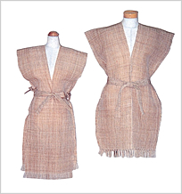
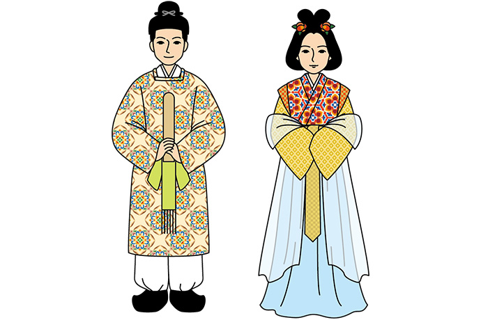
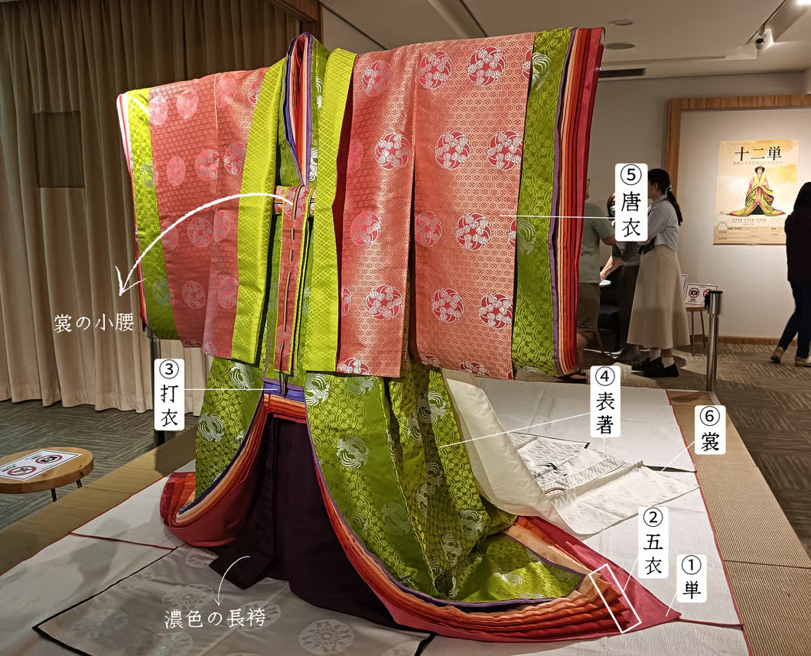
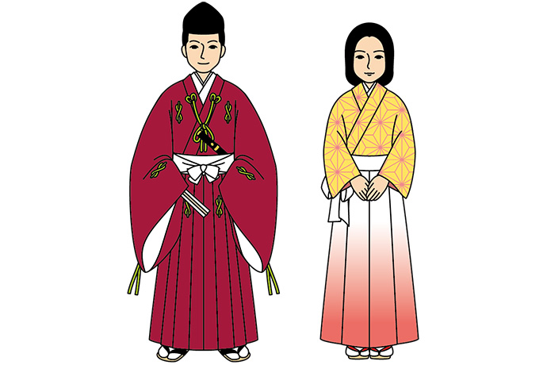
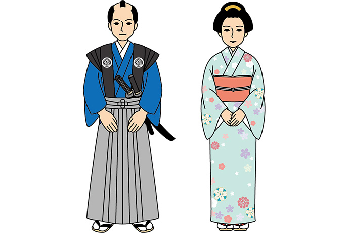
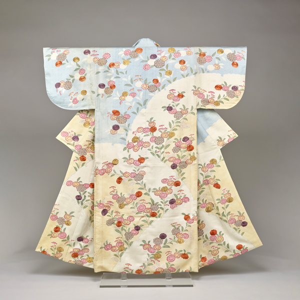
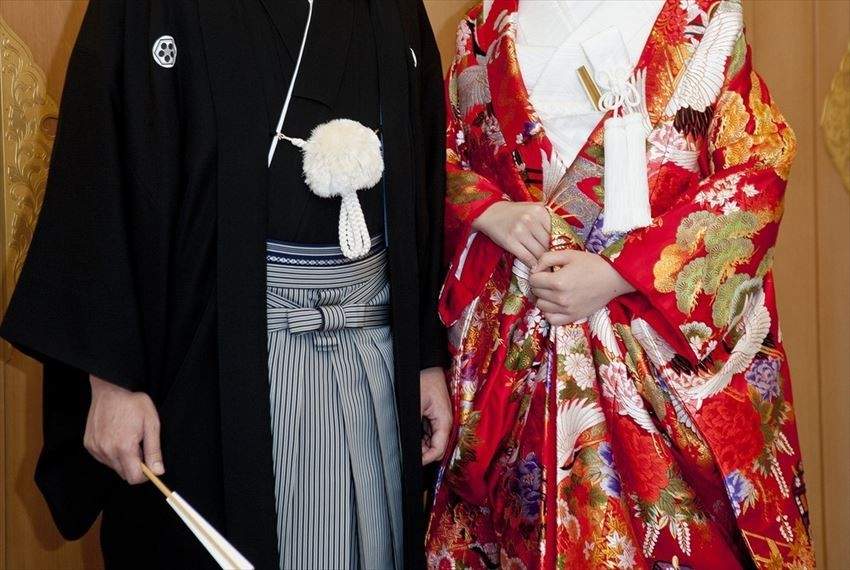
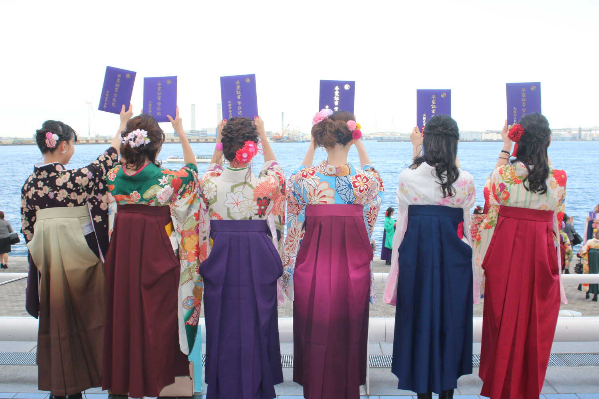

彌生時代的貫頭衣
和服最初的型態為簡單的布料組合。男性穿著一片式包裹的「卷布衣」，女性則穿著如彭丘般、將布料對折開孔套入的「貫頭衣」。

奈良時代代表服飾
受盛唐文化影響，日本頒布「衣服令」確立階級體系。出現了明顯的雙重結構：統治階級仿效唐制，而基層勞動力則穿著結構簡單的「小袖」。

平安時代-十二單
核心轉變在於「直線裁」技術的成熟。貴族女性發展出由多層絲綢堆疊的「十二單」，透過「襲色目」展現對季節變化的敏銳度。

鎌倉時代武士服飾
政治權力移轉至武士階級，服飾轉向簡約與實用。原本作為內衣的「小袖」逐漸外著化，成為現代「著物」的雛形。

江戶時代代表服飾

精緻的友禪染小袖
幕府透過「奢侈禁止令」限制材質，卻激發庶民在微小細節中追求精緻的動力，例如利用精細織紋與染色技術展現自我。

傳統婚禮和服

畢業典禮用的袴
明治維新後洋服普及。二戰後，和服轉而與人生重要里程碑掛鉤，成為象徵日本傳統與民族認同的文化符碼。